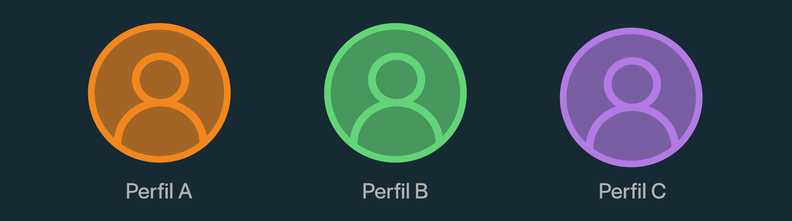

Perfil A
Perfil B
Perfil C
A lo largo del siguiente artículo se mostrarán características de tres perfiles distintos de usuarios de spotify:
Tu objetivo como lector es intentar adivinar a quién de nosotras corresponde cada perfil de usuario. Los datos utilizados fueron provistos por Spotify.
Perfil A
Perfil B
Perfil C

Géneros: Latino, Rock Nacional, R&B
Artistas más escuchados: Rels B, Quevedo, Miley Cyrus
Lugar preferido para escuchar música: Gimnasio
Géneros: Latino, Rock Nacional, Alternativa/Independiente
Artistas más escuchados: No te va a gustar, Adele, Bon Iver
Lugar preferido para escuchar música: Auto
Géneros: Rap, R&B, Rock Nacional
Artistas más escuchados: WOS, C Tangana, Fito Paez
Lugar preferido para escuchar música: Auto
Observemos el promedio de la popularidad, bailabilidad y valencia de las canciones más escuchadas por cada uno de los perfiles
La popularidad de una canción se basa en el número total de reproducciones que ha tenido y en relación a cuán recientes son estas. Se mide en un rango de 0 a 100.
La bailabilidad describe cuán adecuada es una canción para bailar. Se mide en un rango de 0 a 1.
La valencia describe la positividad musical transmitida por una canción. Se mide en un rango de 0 a 1.